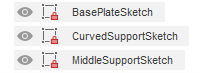

Project CNC
In this part I will cover the modelling, manufacture and assembly of my CNC component for this module project.
Modelling
This probably isn't the best engineering practice, but due to the limited timeframe for this project, I have to get
I first modelled the baseplate followed by inserting my placeholder turbine on top. Whilst it might not be fully fleshed out on the interior and especially the fan turbine, the proportions of the frame and slots for the stands to fit in should not be changing.


To ensure a good fit and to ensure the dimensions were right, I ran a cross sectional view of the stand and the turbine,

Now that I have modelled my stand, I can proceed to cut it out.
Fabrication
In order to cut my stand, I'll first have to create sketches/2d profiles of each piece that I have modelled. I created a sketch for each profile:
After that, I saved each sketch individually as its own .dxf.
Due to the limitations of the trial version of vcarve pro, I'lll import the .dxf files into vcarve pro at the T11C computer which is linked to the CNC router.
With this method, I will have to manually place the dogbones and tabs there. However, considering how many times I have redone my vcarve pro profile, I don't think it will take too long and cause much of a problem there.
I copied my .dxfs to my thumbdrive and using vcarve pro at the T11C computer, imported them onto the workspace/canvas:
I didn't take many pictures due to the nature of the workshop but here are the images:


After cutting the pieces, I
Assembly
When I first assembled the stand, I got the orientation of my middle support piece wrong. Since my middle support piece is not symmetrical, the proportions were off as a result, the nozzle being much closer to the rear.
I had to disassemble the stand which took some time since it was the first time I had assembled it and it was an extremely tight fit.